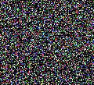
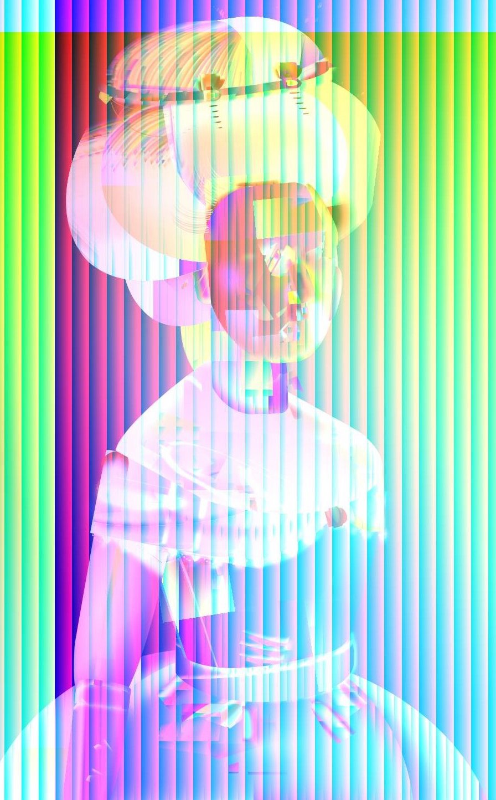
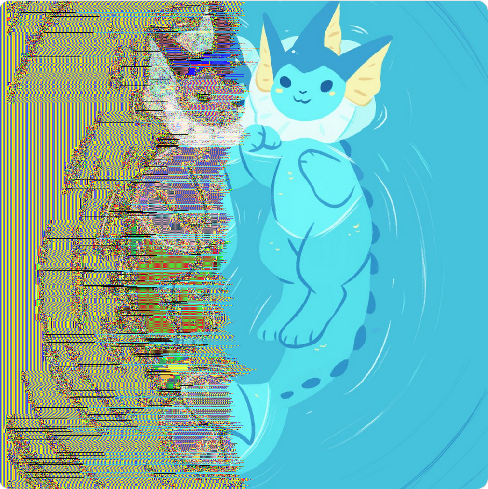
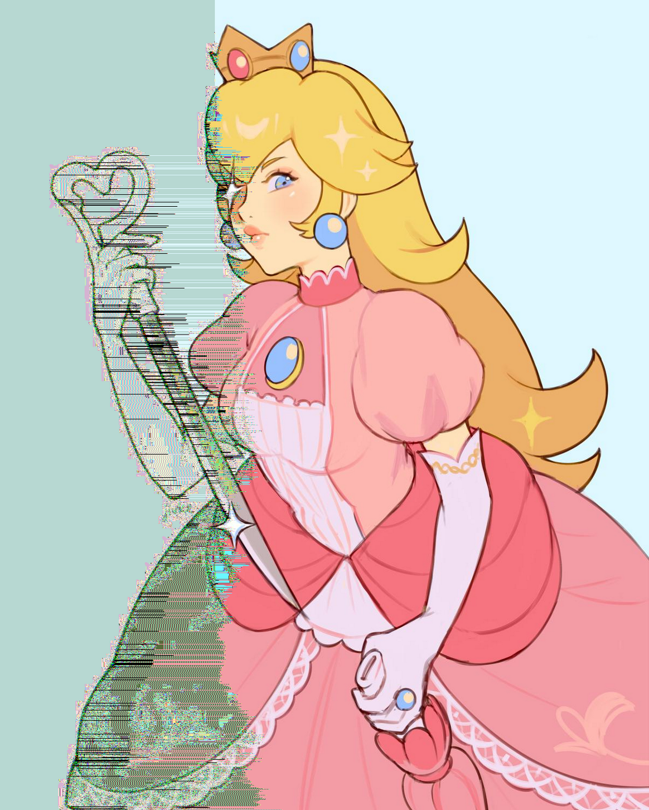
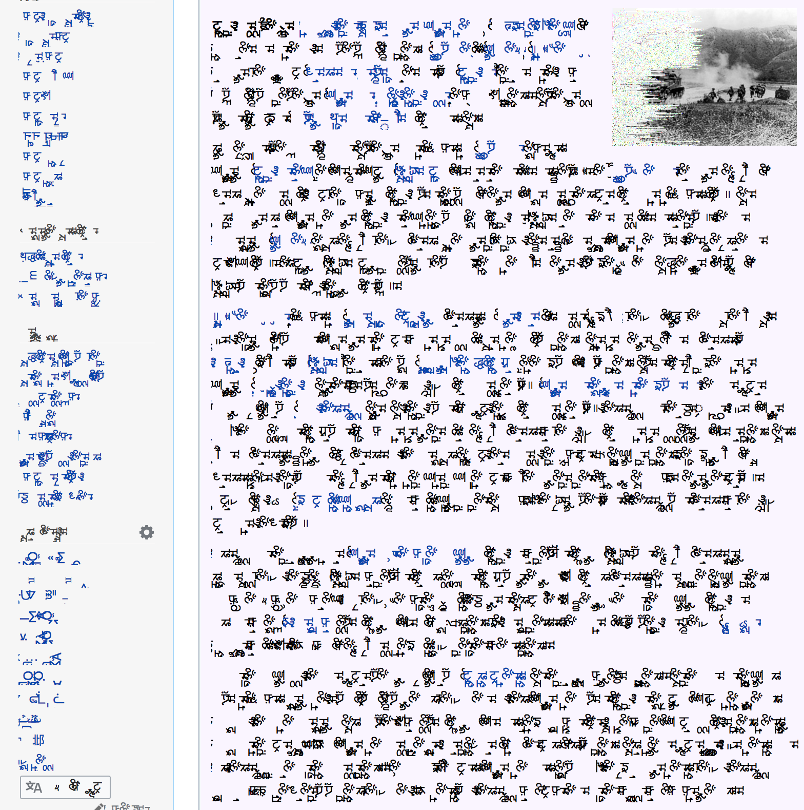
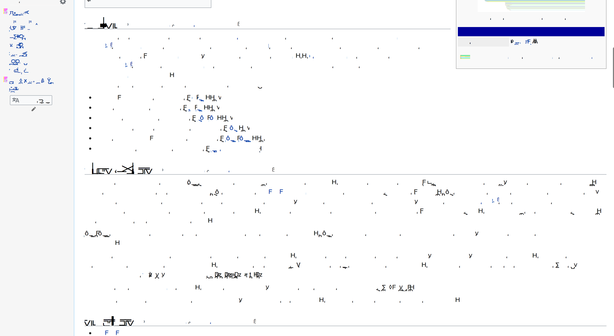
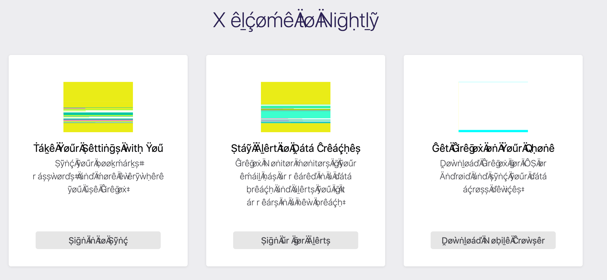
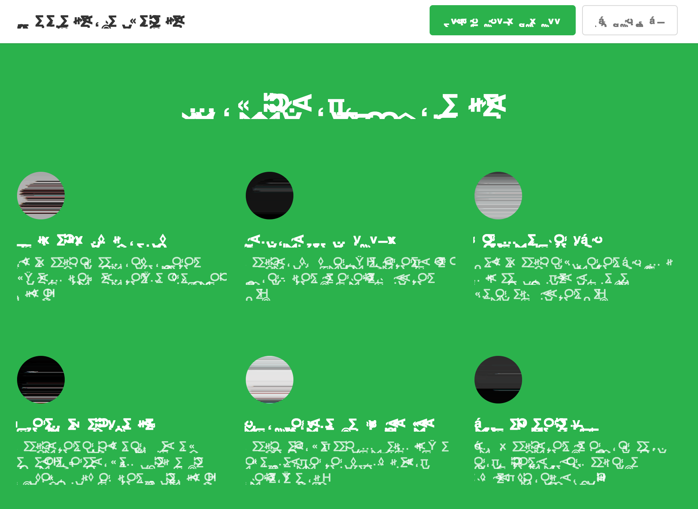
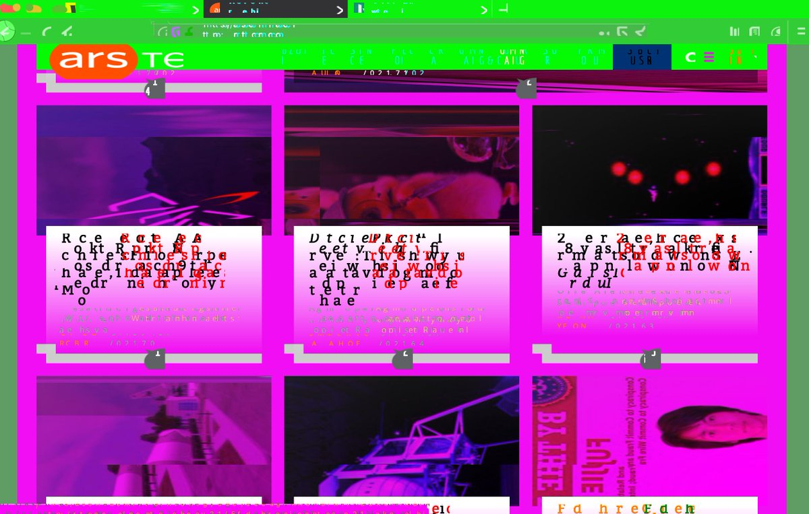

Let's Corrupt The Web
Scroll down for pretty pictures!
Hey there, I'm Gankra! This a collection of some of the most interesting "found pieces" I've created by corrupting Firefox's rendering code and browsing the web.
This work was heavily inspired by my favourite artist, DataErase! One of her most notable styles involves producing glitchy-looking images using assets from PC-98 games, or as she puts it, glitching hentai. That work really resonates with me, and inspired me to produce my own glitch art!
I've always struggled with visual design, and I don't have any interest in copying DataErase's or anyone else's style, so I looked to what I do know: actually fucking up games. I always found joy in breaking games, which you can see all the way back in my work on Homestuck, where I immediately introduced the concept of Trickster Mode, an easter egg that messed up the player sprite and let you walk out of bounds.
 While I don't do any gamedev these days, I do work on Firefox's graphics team, where a lot of the same concepts apply. Since we've spent the last ~3 years writing a completely new rendering backend for Firefox, we've had lots of wonderful corruptions to marvel at. Look at our team's friggin' logo, we're absolutely in it for those juicy glitches!
While I don't do any gamedev these days, I do work on Firefox's graphics team, where a lot of the same concepts apply. Since we've spent the last ~3 years writing a completely new rendering backend for Firefox, we've had lots of wonderful corruptions to marvel at. Look at our team's friggin' logo, we're absolutely in it for those juicy glitches!
So hey, it's my job to isolate and fix rendering bugs in Firefox, so let's do the opposite! Let's mess up firefox's rendering code real bad, and see what the web looks like when you do. Also let's have some fun writing up high-minded descriptions of what is ultimately just random garbage.
(This is a living archive of my experiments, I hope to eventually do more!)
Notes on The Approach

To me, the biggest issue to solve in making interesting rendering corruptions is structure. Sure you can completely garble stuff up, but total noise isn't actually interesting. Or rather, it looks the same everywhere and you get bored with it really fast. The best rendering corruptions have some larger structure to them, and since we're corrupting the web, they ideally preserve some aspect of the thing we're rendering.
Unfortunately, modern rendering is all about breaking things up into small pieces to process independently. As a result, the structure of any corruption you introduce tends to only have the scale of those independent pieces, which starts to look a lot like random noise.
On the other hand, if you perform your corruptions earlier in the pipeline where large scale structure exists, it can be hard to produce effects with interesting details. Don't get me wrong: it's really funny when you scroll down a page and one of the paragraphs shoots off horizontally (a real bug I once fixed in Firefox), but it doesn't really scratch the same glitchy itch?
So far, I've gotten my best results with a technique I like to call Right Value Wrong Place. The basic idea is simple: rather than just inserting random changes or disabling some important check, take some of the real and correct values being fed into the code you're corrupting, and use them in a completely wrong place. For instance, what if the number of bytes in every pixel was derived from its color? The wronger the better; if you feed values into slightly wrong places you get relatively boring effects. For example, mixing up the color channels on an image only tints colors.
The nice thing about Right Value Wrong Place is that low-level corruption becomes driven by the high-level structure of the content. There's lots of high level structure that dictates a pixel's color or a character's glyph. This also lets your corruption inherit the structure of the original content in unexpected ways! Instead of seeing one glitchy page and knowing what all the others will look like, you discover knew and exciting effects as you browse through content with different structure!

Source Material - Diana Smith's "Pure CSS Francine"
(Included with permission from the original artist)
Francine is fun to ruin because she exists to torment browser implementations. Unlike a normal raster image, she's made up of hundreds of little divs slammed full of gradients, filters, and transforms. Normally when we mess her up, it's some subtle bug that makes a random patch in her design look wrong, like a sloppy shape-shifter.
The final result I got was essentially turning this broken shape-shifter effect up to maximum. All of her facial details have melted away, and her entire body is mired by mysterious patches of discontinuity. This partially reveals the incoherent mess she really is, as she stares blankly into nothingness. Huge Mood. Same.
My coworker liked this one so much that he printed off stickers of it. If you ever bump into me in meatspace, I might have a few to share!
Corrupting The Brush Shaders
This was before I worked out the Right Value Wrong Place approach, so I was mostly just messing around with colors inside WebRender's "brush" shaders, which are fancy texture copiers. I actually mostly work near the front of our rendering pipeline, so I don't really understand this code very well!
Embarrassingly, I spent a while failing to mess up transparency in the brush shaders, wanting more things to "poke through" and randomly dissolve. I'm pretty sure what I was trying to do didn't actually make any sense, in retrospect.
We generally avoid creating proper 3d scenes where making something transparent at the last second would "show" what's logically underneath it. Everything is clipped, culled, and fed through opaque passes as much as possible, so there isn't anything "underneath" to reveal. That sort of stuff only happens if there's already opacity or animations to motivate things being drawn into their own textures and composited.
Also, as I was shocked to learn when I first started working with GPUs: they really don't understand transparency, and properly managing transparent things is mostly the CPU's problem, because it messes up the depth buffer. So messing up transparency in the shaders wouldn't work even if there was stuff behind it.

Source Material - Lee Janae's "VAPOREON hold paws"
(Included with permission from the original artist)
I absolutely love what this effect does to clean designs with strong silhouettes!
On most art it usually results in a nice effect highlighting the figure's edge like a glitchy shadow, but for whatever reason it loved this piece and complete consumed one of the figures.
The happy vaporeon effortlessly holding their tired and fragmented partner gives me big relationship feels, and I'm going to cry??
Get yourself a big pawby vap gf.
Corrupting The JPEG Decoder
This effect is achieved by feeding the colors of a decoded jpeg into the pointer
arithmetic for copying pixels around. So basically certain colors completely mess
up how we copy the pixel data around, destroying the left side of the image.
This produces a really nice "content-aware" corruption effect, as you can see the corruption creeping around the sink at the top. I have absolutely no idea why it only happens on the left and then abruptly stops.

Source Material - jivke's "smash update"
(Included with permission from the original artist)
I loved peach as a kid; she was obviously the best character in Super Mario 2 and Super Mario RPG! Alas, Nintendo seems mostly interested in making her sit around castles and do nothing, even though she can fly and hits like a truck! But Smash Ultimate finally gave us a modern peach as I knew her: a terrifying murder demon.
Needless to say, I already loved the original art here! This peach will absolutely stab me and I'm here for it. But my heart absolutely sang when I saw this corruption! Murder Demon peach is finally ascending to her true form, unbound by reality. I love her and will die for her.
I also wanted to show this piece as an exemplar of the typical effect this jpeg corruption creates: a simple glitchy highlight around the left edge of the figure.

Source Material - Marathi Wikipedia
I really like the effect I got with Marathi! As someone who can't read Marathi, but uses it a bit for testing text rendering features (cursive and ligatures), I've always found it to be a really beautiful language! The beauty I see in it is a very precise and crafted thing, like architecture or machinery, but this glitch changes that. Check out this sentence from the pictured page, and how it has this nice precise line that flows through the whole text:
तिकडून इंफाळकडूनही चालून आलेल्या दोस्त सैन्याशी त्यांनी मैल दगड १०९ येथे संधान बांधले व इंफाळला पडलेला वेढा मोडून काढला
Once corrupted, you get a more chaotic and organic beauty, like a field of flowers. The architecture and machinery has collapsed and given way to nature! 🌸
Corrupting The Glyph Rasterizer
This effect is achieved by just messing up the arguments WebRender passes into CoreText. I believe every change here is caused by arbitrarily deriving new values from the glyph index, including slightly perturbing the bits of the glyph index itself. Most notably the glyph index's bits are being fed into a bunch of checks for whether we're supposed to apply certain transforms like rotation, which is why there are so many rotations.
Source Material - English Wikipedia
English (and other simple-alphabet-based languages) turned out less inspiring, but still neat. Interestingly, the shallow alphabet means you can't do many changes to the glyphs without leaving the language entirely. Not a problem for the beefier eastern languages.
I'm actually not 100% sure this is english. All the languages with a similar structure end up looking like this. It's not that interesting to show them all.
I'm also not bothering to show Japanese Wikipedia. Kanji are blocky and generally not actually composed of ligatures, so they didn't actually change very dramatically. Maybe the gibberish is full of beautiful japanese poems, but it's not that visually compelling. Same goes for Korean and Chinese text.

Source Material - Some Other Language's Wikipedia?
I lost track of what language this was, but it was really striking to run across it. I didn't change anything compared to the previous images, it's just that for whatever reason this language gets totally destroyed by the technique used.
This is the kind of surprise I love to find!

Source Material - Firefox Launch Page
This one is showing a much milder effect from when I was first testing out breaking the glyph rasterizer. What's cool about this one is that it vaguely preserves english text so I could actually browse the internet like this. Somehow the changes I was making mostly just were adding random accents.
I really like this one because it's a little friendly hello from Firefox, who seems to be unaware of how wrong things have gone.
Strong "Start Wandows Ngrmadly" vibes.
Source Material - Firefox Launch Page
Oops, too far!
Great contrast between this one and the previous one! Our little friendly hello has been replaced with the shrieking of a dial-up modem.
Otherwise, not the best effect. We're in "pure noise" territory.

Source Material - Feedly Signup Promotional Page
There's something deeply surreal and wrong about highly structured pages with detail-drained images and destroyed text. Like an alien or monster is badly mimicking what they saw and trying to lure you in.
DO NOT PURCHASE A WARE

Source Material - Ars Technica
This was my first experiment in corrupting Firefox's rendering, included for fun. There isn't really any coherent theme or style. All the effects are kinda whatever. It's just a bunch of little random changes at different levels in the pipeline, on a page with some text and images.
My favourite part is that you can clearly see that macos drew its own versions of the window close/minimize/maximize buttons on top of the disaster versions we drew. Apple will rest at nothing to uphold the integrity of its branding and iconography.
Corrupting the Display List
WebRender lives in a separate (logical) process from the one each webpage lives in (for various reasons). As a result, when a webpage thinks it's ready to draw another frame, it needs to serialize a description of the page and send it over IPC. This description is the WebRender Display List (WRDL), a list of high-level-ish drawing commands like "make a blue rectangle here", "draw this glyph here", and "apply these transforms and filters".
This is one of the parts of WebRender I'm most familiar and comfortable with, so it was natural for me to start here. A lot of the effects you see are very "display-list scale" as a result. For instance, the duplicated, wobbly, color-changed text is something very easy to do at this level.
As discussed in my big rant about "structure", these kinds of changes are pretty underwhelming, which is why I quickly moved to a different approach.